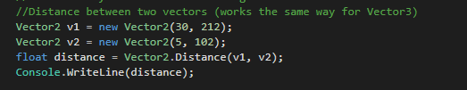
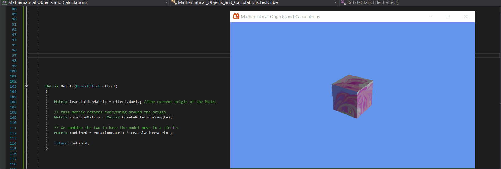
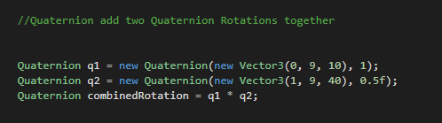
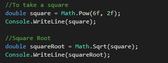

01 Vektoren & Abstandsberechnungen
C# und Monogame bieten vorgefertigte Methoden für Vektorberechnungen an. Hier ein Beispiel zur Vektorberechnung (Abstandsberechnung zw. zwei Vektoren). Hierbei ist es egal ob es sich um einen Vector3 oder einen Vector2 handelt. 
02 Matritzen
Matritzenberechnungen dienen dem Transformieren von Vektoren. Da jeder Eckpunkt von z.B. einem 3D-Würfel nichts weiter als eine Vektorkoordinate ist, kann dessen Position, Rotation und Größe durch die entsprechenden Matitzen verändert werden (Transformations-, Rotations- und Skalierungsmatritzen). 
03 Quaternion
Quaternions sind komplexe mathematische Strukturen. Im Grunde kann man sagen, dass sie Rotationen speichern. Um Rotationen zu kombinieren, müssen Quaternionen multiplizert werden. 
04 Quadrieren & Wurzel ziehen

Quellen und weiterführende Links
01 https://docs.microsoft.com/de-de/dotnet/api/system.windows.vector.multiply?view=netframework-4.8
02 https://docs.microsoft.com/de-de/dotnet/api/system.windows.media.matrix.multiply?view=netframework-4.8
https://docs.microsoft.com/de-de/dotnet/api/system.numerics.matrix3x2?view=netframework-4.8
https://docs.microsoft.com/de-de/dotnet/api/system.numerics.vector2.distance?view=netframework-4.8
03 https://www.youtube.com/watch?v=3RQmzVGI8tQ
https://docs.microsoft.com/de-de/dotnet/api/system.numerics.quaternion?view=netframework-4.8
04